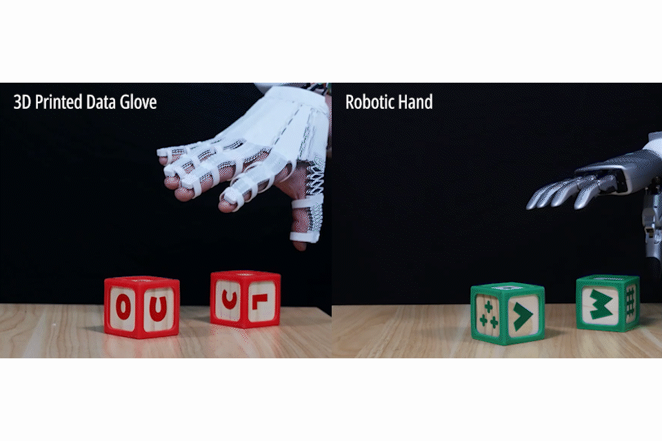
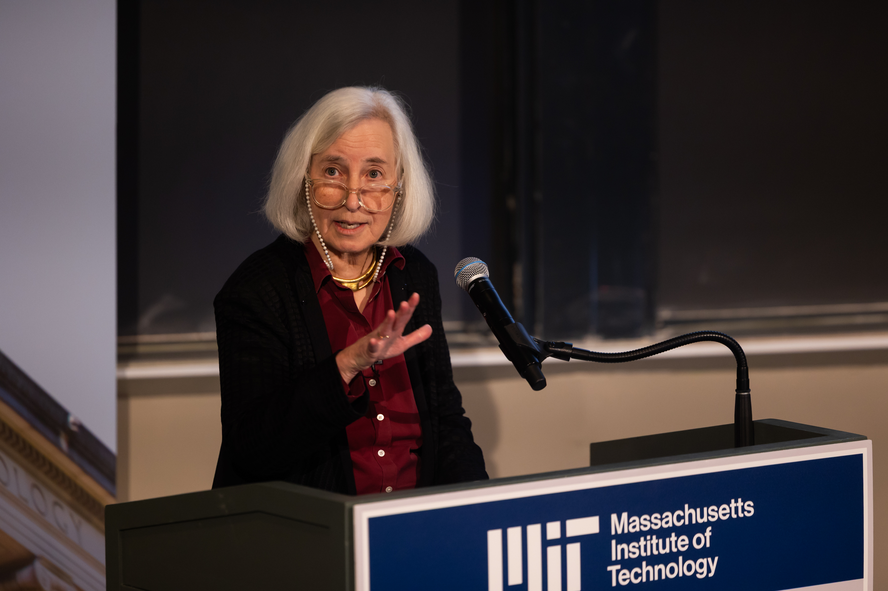
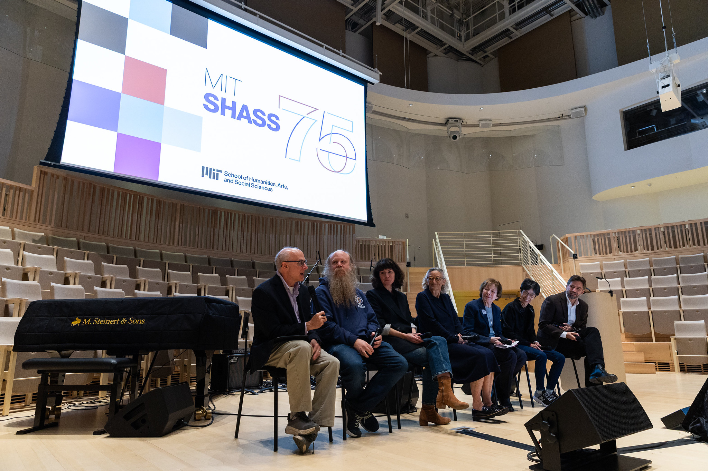

Independent AI-assisted summaries of linked reports. Headlines, dates and source URLs are supplied by NewsAPI; summaries are not independent verification of full articles. Please read original reports for details.
01
转运站更新
Transfer Station Update
韦斯顿镇通知居民，由于持续的人手不足，转运站将继续按照夏季时间运营，直至另行通知。
The Town of Weston is notifying residents that, due to ongoing staffing constraints, the Transfer Station will continue operating on summer hours until further notice.
Town of Weston Massachusetts · 2026-09-25
原始报道 / Original source ↗02
杰森·塔图姆在凯尔特人对尼克斯的胜利中反弹：8个要点
Jayson Tatum bounces back in Celtics’ statement win over Knicks: 8 takeaways
在第四节，米切尔·罗宾逊做出了两次响亮的表现，尽管他在比赛中相对安静。
In the fourth quarter, Mitchell Robinson — who had an otherwise relatively quiet game — made two of the loudest plays you’ll see.
Boston.com · 2026-10-24
原始报道 / Original source ↗03
丹·柯林斯回归Hunneman担任高级副总裁
Dan Collins Returns to Hunneman as Senior Vice President
Hunneman宣布丹·柯林斯回归担任高级副总裁，带来了超过20年的商业房地产经纪经验。
Hunneman has announced the return of Dan Collins as senior vice president, bringing more than 20 years of commercial real estate brokerage experience to the Boston-based firm.
Boston Real Estate Times · 2026-10-23
原始报道 / Original source ↗04
伊曼纽尔学院提议在LMA建设10层实验室大楼
Emmanuel College Proposes 10-Story Lab Building in LMA
伊曼纽尔学院房地产官员提交了在波士顿长木医疗区开发一座10层、306,000平方英尺实验室大楼的计划。
Emmanuel College real estate officials submitted plans to develop a 10-story, 306,000 square-foot lab building in Boston’s Longwood Medical Area.
Banker & Tradesman Massachusetts · 2026-10-23
原始报道 / Original source ↗05
为爱船的候鸟提供的3卧室牧场
A 3-BR ranch for boat-loving snowbirds in Fort Myers
这座单层的佛罗里达海滨住宅拥有105英尺的海滨，配有两个码头和一个10,000磅的船升降机。
The single-story waterfront Florida home has 105 feet of waterfront with two docks and a 10,000-pound boat lift.
Boston.com · 2026-10-24
原始报道 / Original source ↗
国际油价 / Global Oil Prices
布伦特原油与WTI美国原油最新市场行情。
Brent and WTI crude oil market quotations.
Brent 最新行情 ↗
WTI 最新行情 ↗
价格及更新时间以行情提供方为准。
06
特朗普推动大规模人工智能建设，选民对此持谨慎态度
Trump is pushing a massive AI buildout. His own voters are wary of what comes with it
一项新的CNBC调查发现，选民普遍反对附近的人工智能数据中心，这给特朗普和共和党带来了政治挑战。
A new CNBC survey finds broad voter opposition to nearby AI data centers, creating a political challenge for Trump and Republicans ahead of the midterm election.
CNBC · 2026-10-24
原始报道 / Original source ↗07
英伟达作为人工智能融资者的角色面临首次重大考验
Nvidia's role as AI financier faces first big test as neoclouds take market hit
随着英伟达从芯片制造商转变为行业融资者，一些投资者认为该公司承担了与人工智能建设相关的过大风险。
As Nvidia has gone from chipmaker to industry financier, some investors see the company taking on outsized risk tied to the AI buildout.
CNBC · 2026-10-24
原始报道 / Original source ↗08
美国出生率降至历史低点，但年长女性生育更多
U.S. birth rate drops to record low, but older women are having more babies
根据疾病控制与预防中心的报告，美国出生率降至历史最低水平，但30岁以上女性的生育数量有所增加。
The U.S. birth rate fell to its lowest level ever recorded, according to a report from the Centers for Disease Control and Prevention.
NPR · 2026-10-24
原始报道 / Original source ↗09
俄罗斯在中期选举最后阶段加大影响力
Russia steps up election influence efforts in final stretch of midterms
研究在线影响操作的研究人员表示，克里姆林宫支持的团体正在恢复他们在美国和全球选举中播种不信任和分裂的策略。
Researchers who track online influence operations say Kremlin-backed groups are renewing tactics they've used to sow distrust and discord in previous elections in the U.S. and around the world.
NPR · 2026-10-23
原始报道 / Original source ↗10
卡塔尔购买美国天然气的交易显示伊朗战争重塑全球能源市场
Qatar deal to buy U.S. natural gas shows how Iran war has redrawn global energy markets
伊朗战争正在改变全球能源市场，并使美国公司，特别是液化天然气出口商受益。
The Iran war is transforming global energy markets and benefiting U.S. companies, especially liquefied natural gas exporters.
CNBC · 2026-10-23
原始报道 / Original source ↗11
这个十年缺少重大影响的中期选举
This decade has been missing its big-impact midterm
过去一百年中的每个十年都至少产生了一次在国会和国家政治中产生重大影响的中期选举。
Every other decade over the past hundred years has produced at least one midterm that made a big difference in Congress and in national politics more broadly.
NPR · 2026-10-24
原始报道 / Original source ↗12

这款设计软件重新构想日常物品为自我意识设备
This design software reimagines everyday objects as self-aware devices
“X-Hinges”帮助设计和3D打印带有互动元素的物品，如灯具和手套，自动嵌入传感器以感知和适应人类接触。
“X-Hinges” helps design and 3D print items like lamps and gloves with an interactive twist: automatically embedded sensors that perceive and adaptively respond to human contact.
MIT News · 2026-10-22
原始报道 / Original source ↗13

在麻省理工学院，玛莎·米诺谈论如何维持民主
At MIT, Martha Minow speaks on sustaining democracy, both by using and overcoming AI
在康普顿讲座中，这位杰出的法律学者警告可能会“失去启蒙时代”，同时建议创新如何满足我们的公民和文化需求。
In Compton Lecture, the distinguished legal scholar warns of potential “loss of the Enlightenment” while suggesting ways innovations can meet our civic and cultural needs.
MIT News · 2026-10-23
原始报道 / Original source ↗14

在麻省理工学院强化人类理解的价值
Reinforcing the value of human understanding at MIT
在人文学科、艺术与社会科学学院的75周年研讨会上，校长萨莉·科恩布斯表示“麻省理工学院比以往任何时候都更需要你们的独特见解和指导。”
During the School of Humanities, Arts, and Social Sciences’ 75th Anniversary Symposium, President Sally Kornbluth said “MIT has never needed your particular insight and guidance more than we do now.”
MIT News · 2026-10-23
原始报道 / Original source ↗